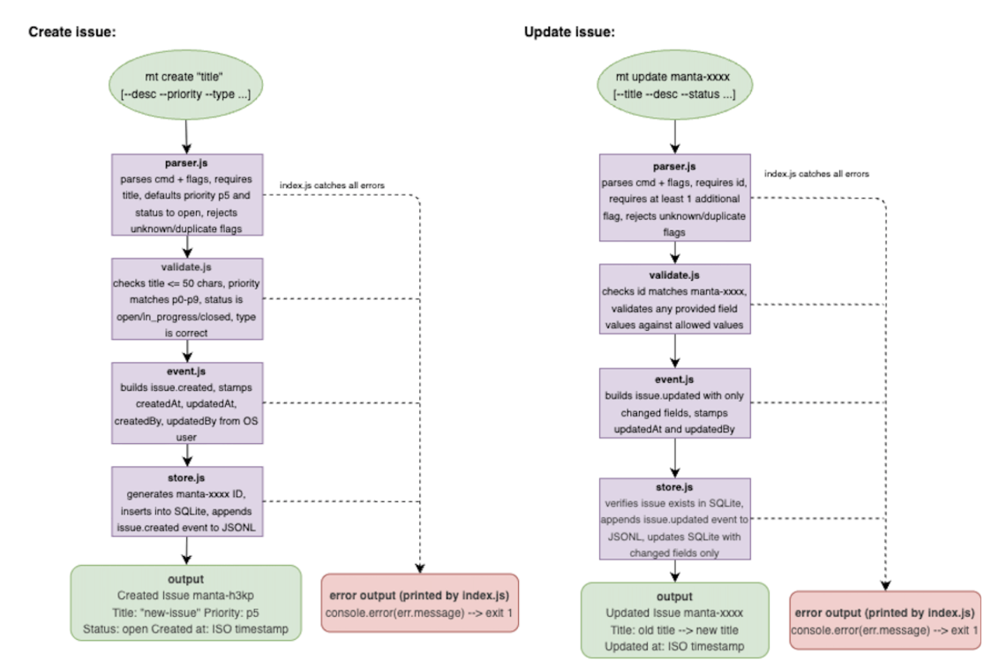

Quick start
Getting started
Install Manta, initialize your project, and run your first commands in under five minutes.
-
Install Bun
Manta requires Bun.
curl -fsSL https://bun.sh/install | bash bun --version -
Install Manta
bun install -g manta-itOr from source: clone the repo, then
bun installandbun link. -
Initialize your project
cd your-project mt init -
Create and view an issue
mt create "My first issue" --priority p1 mt viewUse the ID from
createfor update/close/delete commands.
Where your data lives
Manta creates .manta/ in your current working directory:
manta.jsonl
Append-only event log — the source of truth. Commit this to git.
manta.db
SQLite cache for fast reads. Regenerated from the log; usually gitignored.
Identity on issues
createdBy and updatedBy are set automatically from your OS
username (USER / USERNAME). You never type them manually.
Sync with teammates
After git pull updates .manta/manta.jsonl:
- Every command refreshes the cache automatically before it runs — including
mt view, so your list is always up to date. mt syncis available if you ever want to rebuild the cache on its own.
